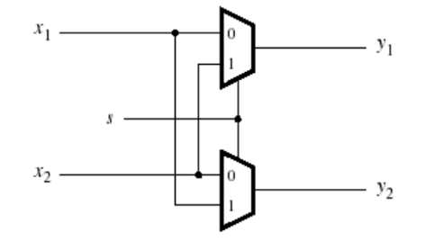
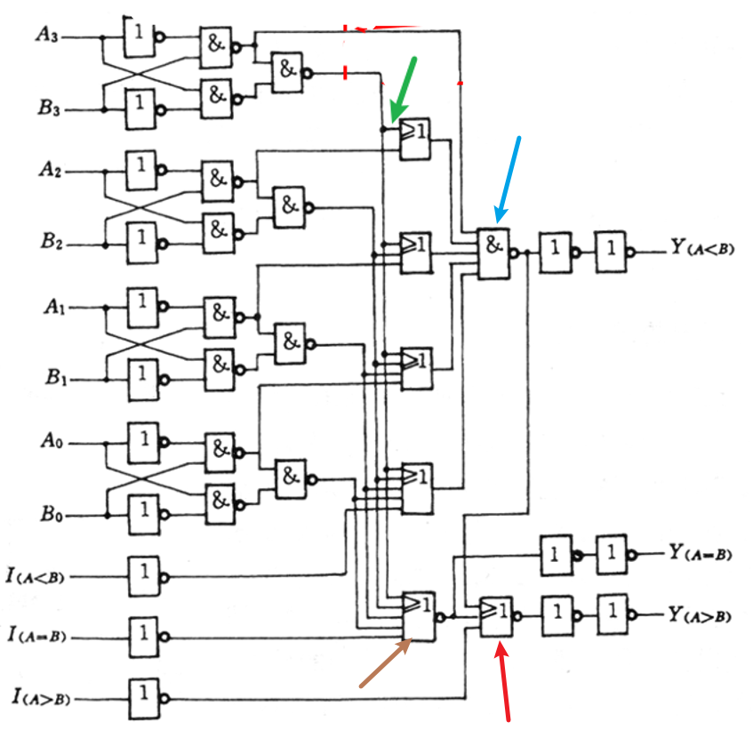

写于2023/10/6，这门课其实还是有点意思的。但是上个月身体原因一直在关心我自己的身体，所以这门课我全翘掉了，一点没听。现在马上就要实验课了，于是打算在国庆的末尾把这门课学了。目的是能做出几个组合逻辑电路的实验项目。
自学参考的内容为老师ppt、各种网上博客。
学完后打算去刷题巩固一下，刷题打算在一个up主视频里刷：传送门
最后，如果有朋友打算认真看这篇Blog进行学习的话，为了更好的阅读体验建议开梯子，因为本文有许多图片和一个视频。（存储在github中）
先放一张各种门的符号图，后面忘了的话可以参考：

一. 组合逻辑电路(1)
1.1. 概述
电路分为组合逻辑电路和时序逻辑电路。差别就是组合逻辑电路无记忆功能，时序逻辑电路有。
描述电路的逻辑功能有以下几种形式：
- 语言描述
- 电路图
- 逻辑表达式，即y = f(a1, a2, a3, ..., an)
- 真值表
- 卡诺图
- 波形图
1.2. 组合逻辑电路的分析 和 逻辑函数的设计方法
分析：
即给你一个电路，让你告诉我这个电路是干啥用的。
分析一个组合逻辑电路的固定套路很简单：
- 一层一层写出逻辑表达式
- 对最后得到的逻辑表达式进行化简
- 化简手段1：卡诺图
- 化简手段2：\(A + A \cdot B = A 或 A \cdot (A + B) = A\)
- 化简手段3：\(A + \overline{A}B = A + B 或 A \cdot (\overline{A} + B) = A \cdot B\)
- 化简手段4：\(\overline{A}\overline{C} + A\overline{B} + \overline{B}\overline{C} = \overline{A}\overline{C} + A\overline{B}\)（对于\(\overline{B}\overline{C}\)添项即可证明）
- 化简手段5：\(A \oplus B = \overline{A}B + A\overline{B}\)
- 化简手段6：\(A \odot B = (\overline{A} + B)(A + \overline{B})\)
- 对化简后的逻辑表达式列真值表，观察真值表，观察出此电路的功能
例子：

- T1是个与门，T2是个或门，第一层剩下都是与门，第二层一个或门，第三层一个非门，第四层一个与门，最后一层一个或门。最后通过真值表很容易看出ABC三个输入变量但有两个输出变量。不难想到是一个全加器。A、B是两个加数，C是上一位的进位，F1是当前位，F2是进位。
- 还有许多功能电路啦... ...比如半加器（2输入2输出）、投票表决器（多输入1输出）、奇校验电路（多输入1输出）、一致性电路（多输入1输出）
设计：
告诉你一个功能，让你设计出一个电路来实现它。
也是有固定套路的：
分析功能，确定输入输出变量
- 确定输入输出变量还是有点讲究的，有时候设计的好了可以大大减少运算量和电路的复杂程度。比如下面两个功能，换做是你，你会怎样设计？

- 设计的关键其实是做到尽可能的复用，即对于不同对象的同一属性，尽量用一个变量表达出来。
根据题意，直接构造出电路。或者写出真值表然后写出主析取范式然后再用卡诺图化简后得到最终逻辑表达式
根据逻辑表达式，选取一种门电路，画出电路图
二. 组合逻辑电路(2)
上一节我们已经可以设计出逻辑表达式。但是具体选用哪一种门电路呢？每一种门电路应该如何设计呢？这一节我们就来学习。
2.1. 单输出电路设计
2.1.1. 用与非门设计电路
对于逻辑表达式F = ...中的 + 全部换成 \(\cdot\) 就好了，按照这个思路，只要在 + 的头上画两根取反号就行了，最上面那根保留，下面那根负责把 + 换成 \(\cdot\) 。
但这样得到的实际电路可能耗材过多，实际中有些式子通过观察还能发现可以化的更简，比如下面这个例子：
\(F = A\overline{B} + B\overline{C} + C\overline{D} + D\overline{A} = \overline{\overline{A\overline{B}} \cdot \overline{B\overline{C}} \cdot \overline{C\overline{D}} \cdot \overline{D\overline{A}}}\)
按理说这样就好了，但是还可以化简的。
\(\overline{A\overline{B}} \cdot \overline{B\overline{C}} \cdot \overline{C\overline{D}} \cdot \overline{D\overline{A}} = (\overline{A} + B)(\overline{B} + C)(\overline{C} + D)(\overline{D} + A)\)
上面这个东西，学过二项式定理吗？假如我第一项如果挑B，则第二项不能挑\(\overline{B}\)，只能挑C，那么第三项也只能挑D，依次类推，第四项只能挑A，得到ABCD。同理，如果我第一项挑\(\overline{A}\)，那么我只能得到\(\overline{A}\overline{B}\overline{C}\overline{D}\)。
即：\((\overline{A} + B)(\overline{B} + C)(\overline{C} + D)(\overline{D} + A) = ABCD + \overline{A}\overline{B}\overline{C}\overline{D}\)
对上面那玩意再求两次反，得到\(\overline{\overline{ABCD} \cdot \overline{\overline{A}\overline{B}\overline{C}\overline{D}}}\)
这样子，就得到\(F = \overline{\overline{\overline{ABCD} \cdot \overline{\overline{A}\overline{B}\overline{C}\overline{D}}}}\)
总结下来这个第二种方法就是在第一种方法的基础上把内部通过二项式定理进一步化简。
2.1.2. 用或非门设计电路
对于逻辑表达式F = ...中的 \(\cdot\) 全部换成 + 就好了，按照这个思路，只要在 \(\cdot\) 的头上画两根取反号就行了，最上面那根保留，下面那根负责把 \(\cdot\) 换成 + 。
还有第二种通用的方法，就是将F先求对偶，得到\(F_d\)，这样F就由(xxx) + (xxx) + (xxx)的形式变为(x + x)(x + x)(x + x)的形式了。学过二项式定理吗？同理将\(F_d\)化简，得到最简“与-或”式(yyy) + (yyy)。再在头上加两根取反，最顶上保留，下面那根为了把 + 变成 \(\cdot\) ，最后再对偶回去即可。
上面那段文字是具体过程，流程总结下来如下：
- 对F求对偶\(F_d\)
- 对\(F_d\)展开，利用二项式原理或者卡诺图，得到最简"与-或"式\(F_d'\)
- 对\(F_d'\)取两次反，最上面保留，下面那根化开，得到\(F_d''\)
- 对\(F_d''\)对偶回去
2.1.3. 用与或非门设计电路
这个就更简单了，因为给出的函数表达式都是形如F = xyz + xyz + xyz，所以只需要在F头上加两条杠就好了。
第二种思路就是跟用与非门设计电路的第二种方法一样。加两条杠，最上面不动，下面那个把xyz + xyz + xyz变成()()()型，然后二项式定理展开即可。（如果是与非门第二种设计思路还要将展开的东西再取两次反）
2.2. 多输出电路设计
啊，最直接的想法就是分别把每个输出对应的电路设计出来就好了。但是这样比较憨，当我们化简得到了每个输出对应的逻辑表达式的时候，我们应该能尽可能使每一项复用。看下面这个例子：

可以发现原\(F_1\)中的\(A\overline{B}\)可以变成\(A\overline{B}\overline{C}\)，这样就跟\(F_2\)中的\(A\overline{B}\overline{C}\)一样了，做到了复用。
2.3. 包含无关项的电路设计
其实很简单，看下面这个例子就懂了。
首先我们知道余3码是在8421码的基础上+3得到，因为8421码只有10位，所以余3码也只有10位。而且8421码最小是0000，所以余3码最小是0011（对应十进制数1）。所以这就在输出F中产生了许多无关项d。在画卡诺图时，若不考虑无关项，则把d全置为0；考虑无关项则把d全置为1。最后得到化简后的函数表达式。然后再将这个函数表达式用与非门设计。
2.4. 考虑级数的电路设计
也是看一道例题就可以理解了。

先用最直接的方法，与或非门直接加两条杠结束。与非门直接加两条杠，下面那条杠化开结束。
但是这样设计级数会不会多呢？
如果我们用"与或非门设计电路"中第二种化简方法，试一下：
\(F = \overline{\overline{AB + \overline{A}C}} = \overline{\overline{AB} \cdot \overline{\overline{A}C}} = \overline{(\overline{A} + \overline{B})(A + \overline{C})} = \overline{\overline{A}\overline{C} + A\overline{B} + \overline{B}\overline{C}} = \overline{\overline{A}\overline{C} + A\overline{B}}\)
可以发现，这样设计只有3层。但是原来那样直接加两条杠是4层。所以当考虑电路的级数时，在用与或非门设计电路时，可以考虑进一步化简优化电路的级数。
如果用与非门，就不需要考虑进一步化简了。因为在与非门进一步化简后，还需要再内部再添加两条杠。级数肯定比不继续化简多。
2.5. 综合题
- 设计一个组合电路，将8421BCD码变换为余3码。
先确定输入输出变量，因为8421BCD码是用四个二进制数表示十进制数0~9，所以有四个输入A、B、C、D代表四个二进制数。同理四个输出W、X、Y、Z代表变换后的余3码。
然后列出真值表，因为BCD只能表示十进制0~9，所以注意表中有无关项d。
这里不考虑无关项，所以在后续画卡诺图时都将d置为0。
因为是四个输出，所以属于多输出电路。所以先画四个卡诺图得到四个逻辑表达式（其实对于Z，发现其很有规律不用画卡诺图都可以知道它就是\(\overline{D}\)）
画卡诺图过程省略，得到四个逻辑表达式： \[ W = A + BC + BD \\ X = \overline{B}C + \overline{B}D + B\overline{C}\overline{D} \\ Y = CD + \overline{C}\overline{D} \\ Z = \overline{D} \] 此时我们需要思考，是否能做到项的复用呢？乍一看没发现能复用的，所以先不考虑复用，继续将式子进一步化简先。先从简单的开始画：
\(Z = \overline{D}\)
\(Y = \overline{C} \oplus D\)
\(X = \overline{B}(C + D) + B\overline{(C + D)} = B \oplus (C + D) = B \oplus \overline{\overline{C}\overline{D}}\)
\(W = A + B(C + D) = A + B\overline{\overline{C}\overline{D}}\)
化简后可以发现，\(\overline{\overline{C}\overline{D}}\)这个东西可以做到复用，真不错。
接下来就是选择门电路来设计电路了。这里我选择最常用的与非门 + 异或门设计电路。根据上面的逻辑表达式直接设计即可（W还需化简一下：\(W = \overline{\overline{A} \cdot \overline{B\overline{\overline{C}\overline{D}}}}\)）
最后画出电路：

三. 组合逻辑电路(3)
3.1 编码器
按照我的理解，就是把数字变成二进制数。比如把0 ~ 8变成3位二进制数，或者0 ~ 15变成4位二进制数。
编码器分为普通编码器 和 优先编码器。
- 普通编码器
特点：任何时刻只允许输入一个编码信号。
最常见的普通编码器为8线-3线编码器，如下图：
它的真值表如下：
可以看出，假如我\(I_7\)为高电平，则输出111，就是7的二进制。
那内部电路如何设计呢？根据真值表得出逻辑表达式然后化简，再选用与非门实现即可。
上面这个是8线-3线普通编码器，那如何实现8421-BCD普通编码器呢？
很简单，10个输入，4个输出。列出真值表，发现会有无关项。不考虑无关项，根据真值表得出4个输出的逻辑表达式，然后根据卡诺图化简。最后选用与非门实现即可。
- 优先编码器
特点：允许同时输入多个编码信号，只对其中优先权最高的一个进行编码。
最常见的优先编码器是74148优先编码器，长下面这个样子，需要掌握：
这个图有两个要注意的地方，首先就是所有的\(I\)上面都是有一个取反号的，只是这个图比较小可能看不清晰，然后所有的\(Y、S\)上面也有取反号。还有就是看到红色箭头的地方了吗？这跟前面的8线-3线普通编码器不一样，这代表低电平有效。
\(\overline{S}\)为选通输入端，只有当\(\overline{S} = 0\)时才能正常工作，当\(\overline{S} = 1\)时所有输出端为封锁为高电平。
\(\overline{Y_s}\)为选通输出端，当\(\overline{Y_s} = 0\)说明电路正常工作且无编码信号输入（\(\overline{S} = 0 且所有\overline{I} = 1\)）
\(\overline{Y_{EX}}\)为扩展端，当\(\overline{Y_{EX}} = 0\)说明电路正常工作且有编码信号输入（\(\overline{S} = 0\)且存在\(\overline{I} = 0\)）
知道了每个端口的作用，如何只通过输出端判断此时编码器处于什么状态呢？
- \(\overline{Y_s} = 0\)：电路正常工作且无编码信号输入。（此时\(\overline{Y_{EX}}\)必为1）
- \(\overline{Y_{EX}} = 0\)：电路正常工作且有编码信号输入。（此时\(\overline{Y_s}\)必为1）
- \(\overline{Y_s} = \overline{Y_{EX}} = 1\)：电路被阻塞（此时\(\overline{S}\)必为1）
最后，74148优先编码器的真值表贴上来，上面所有可能你觉得有困惑的点都可以在这张表中得到解答。
- 练习
学了上面普通编码器和优先编码器的知识，来写一道题吧！
请用两片74148接成16线-4线优先编码器，将16个低电平输入信号\(\overline{A_0} \sim \overline{A_{15}}\)编为'0000' ~ '1111'，其中\(\overline{A_{15}}\)的优先级最高。
首先如果是0 ~ 7就直接用一片就好了。思考一下，如果是大于7怎么办？可以这样思考：
15 = 8 + 7
14 = 8 + 6
13 = 8 + 5
12 = 8 + 4
11 = 8 + 3
10 = 8 + 2
9 = 8 + 1
8 = 8 + 0
发现规律了吗？如果是0 ~ 7直接用一片就好了，如果是8 ~ 15就肯定需要用到第二片，但是第二片同样能表达的范围只有0 ~ 7，所以就将8 ~ 15进行数字拆分。
如果输入8，则点亮第四位输出（8421中的8），剩下3位二进制输入0
如果输入9，则点亮第四位输出，剩下3位二进制输入1
如果输入10，则点亮第四位输出，剩下3位二进制输入2
... ...
如果输入15，则点亮第四位输出，剩下3位二进制输入7
思路就是这样，还有一些小细节我在放答案过后再解释：
可以看到\(G_0、G_1、G_2\)门都采用了与非门的设计，因为两片74148必定只会用到一片的输出（0 ~ 7用右边那片，8 ~ 15用左边那片）。
但是如果使得一片工作另一片就停止工作呢？注意左边那片的\(\overline{Y_s}\)端口，左边那片正常工作且有信号输入时输出1，使得右边那片\(\overline{S} = 1\)，所以右边那片直接被堵塞了。如果左边那片正常工作但没信号输入时输出0，使得右边那片被激活。这样就实现了两片中只能有一片在工作。
然后\(Z_3\)就是第四个二进制输出。只要用到左边那片，就输出1。刚好\(\overline{Y_{EX}}\)就可以实现这个功能，只要电路正常工作并且有信号输入\(\overline{Y_{EX}}\)就为0，经过一个与非门之后就变成了1。
3.2 译码器
译码器就是编码器的逆过程。编码器是给它一个数字，输出二进制。译码器就是给它一个二进制，输出一个数字。
译码器分为二进制译码器（最小项译码器）、二—十进制译码器、显示译码器。其中二进制译码器需要掌握74138译码器。
- 二进制译码器（只讲74138译码器）
74138译码器长这个样子：
注意，跟74148解码器不同，这里的三个输入端\(A\)都是高电平有效，输出端\(\overline{Y}\)是低电平有效。这里的\(S、\overline{S}\)是控制芯片是否工作的。
具体来说，只有当\(S_1 = 1 且 \overline{S_2} =0 且 \overline{S_3} = 0\)时，电路才处于正常工作状态。其余情况电路都处于被堵塞的状态。
74138解码器的真值表如下：
- 二—十进制译码器（只讲7442译码器）
我觉得二—十进制译码器就是二进制译码器啊... ...搞不懂为啥还要专门分个类出来。二—十译码器就是说将4个二进制数变成十进制0 ~ 9。
二—十进制译码器最常见的就是7442译码器，它的真值表如下：
可以看到有伪码的存在，这是为什么呢？因为4个二进制数可以表达0 ~ 15，但是因为是BCD码，所以我们得到的数范围是0 ~ 9。所以有一部分的二进制状态没有用到，没用到的地方就称为伪码。
- 显示译码器
啊就是能直观的显示出翻译后信息的译码器。看下面俩图就知道它是什么东西了。
- 练习
试用两片74138组成4线-16线译码器。将输入的4位二进制代码\(D_3D_2D_1D_0\)译成16个独立的低电平信号\(\overline{Z_0} \sim \overline{Z_{15}}\)。
有了前面用两块74148组成16线-4线编码器的经验，这题的思考方式是一样的。首先如果只用一块板的话，3个二进制数，可以得到0 ~ 7。如果大于7怎么办呢？观察一下： \[ (8)_d = (1000)_b \leftrightarrow (0)_d = (000)_b \\ (9)_d = (1001)_b \leftrightarrow (1)_d = (001)_b \\ (10)_d = (1010)_b \leftrightarrow (2)_d = (010)_b \\ ..... \leftrightarrow ... \] 发现规律了没？
只要四位二进制中第四位为0，将剩下3位二进制传给第一块板的三个输入接口。如果第四位二进制为1，那么堵塞第一块版，将剩下3位二进制传给第二块版的三个输入接口。答案如下：
3.3 用译码器实现逻辑函数
因为任何逻辑函数均可化成最小项之和的形式。所以可以用译码器实现逻辑函数的电路，很牛逼。看下面这个例子你就懂了。
首先先将F化成主析取范式：\(F = ABC +AB\overline{C} + A\overline{B}C + \overline{A}BC = m_7 + m_6 + m_5 + m_3\)
意思是说，只要三输入变量按照7、6、5、3的二进制输入，F就是1。否则F就是0。
好，那我们在74138输出端将\(\overline{Y_7}、\overline{Y_6}、\overline{Y_5}、\overline{Y_3}\)用与非门连接起来。只要三输入变量输入7、6、5、3二进制其中的一个，那么\(\overline{Y_7}、\overline{Y_6}、\overline{Y_5}、\overline{Y_3}\)就有一个是0，与非后就得到1。如果三输入变量不属于7、6、5、3二进制中的任何一个，则\(\overline{Y_7}、\overline{Y_6}、\overline{Y_5}、\overline{Y_3}\)都为1，与非后就得到0。
四. 组合逻辑电路(4)
4.1 数据分配器
定义：数据传输过程中，有时需要将数据分配到不同的数据通道上。数据分配器也叫多路分配器，简称DEMUX。
示意图：通过A端口来选择数据输出通道。
电路图：
这个电路还是蛮简单的。
提一嘴，前面学到的74138译码器就可以用来作1路-8路数据分配器。内部电路图ppt没给，但是我觉得就跟上面DEMUX的电路图差不多。
4.2 数据选择器
定义：能够实现从多路数据中选择一路进行传输的电路叫做数据选择器。也叫多路选择器、多路调制器，简称MUX。常见的类型有二选一、四选一、八选一、十六选一。
- 二选一多路选择器
w0和w1分别是两路的数据源，然后s是控制器。先看右边的电路图，假设s是0，则f = w0，假设s是1，则f = w1。左边就是二选一MUX的图形符号。
- 四选一多路选择器
先看真值表，根据真值表就可以直接设计电路了。
所以根据上面的真值表可以写出逻辑表达式：
\(f = w_0\overline{s_1}\overline{s_0} + w_1\overline{s_1}s_0 + w_2s_1\overline{s_0} + w_3s_1s_0\)
下面右图是用非门 + 与门 + 或门来实现上面的逻辑表达式，左图是四选一MUX的图形符号
- 更大规模的多路选择器
可以直接列真值表然后直接构建，也可以用小规模的多路选择器去构建。
看一个由2选1多路选择器构建的4选1多路选择器，就知道如何构建了。
先将w俩俩分组，然后用s0去筛，一下筛掉一半，再用s1去筛，又筛掉一半，最后就选择出来了一路数据。
4.3 数据选择器的运用
2x2纵横开关（是否交换数据传输通道）

- 看图，s是选择器。如果s=0，则y1 = x1, y2 = x2。如果s=1，则y1 = x2，y2 = x1。
实现逻辑函数
最暴力的想法就是列真值表，输入变量A、B、C就是选择器s。每一行的输出就是数据输入通道，输出通道就是f。例如函数\(f = \overline{w_1}w_2 + w_1\overline{w_2}\)，用四选一多路选择器的实现如下：
但在暴力的基础上其实可以优化：可以对真值表做一个改动：
这样子输入变量只有一个w1了，它就是选择器。数据输入通道有两个，分别是\(w_2\)和\(\overline{w_2}\)，数据输出通道一个为f。用二选一多路选择器实现如下：
实现3输入表决器
先列出真值表
对真值表进行优化

此时输入变量两个w1、w2为选择器，数据输入通道4个分别是0、w3、w3、1，数据输出通道1个为f。用4选1多路选择器实现如下：
实现3位异或运算
先列出真值表，并优化
此时输入变量两个w1、w2为选择器，数据输入通道4个分别是\(w_3、\overline{w_3}、\overline{w_3}、w_3\)，数据输出通道一个为f。用4选1多路选择器实现如下：
五. 组合逻辑电路(5)
这一节比较杂，主要是对第（4）内容的一个补充。具体来说，讲了如下内容：
- 用香农展开定理搭配多路选择器实现逻辑函数
- 八选一数据选择器74151
- 双四选一数据选择器74153
- 数据选择器的更多运用
5.1 用香农展开定理搭配多路选择器实现逻辑函数
香农展开定理：
\(f\left(w_{1}, w_{2}, \ldots . . w_{\mathrm{n}}\right)=\overline{w_{1}} f\left(0, w_{2}, \ldots . . w_{\mathrm{n}}\right)+w_{1} f\left(1, w_{2}, \ldots . . w_{\mathrm{n}}\right)\)
↑展开一个变量
在香农表达式中\(f\left(0,w_{2}....w_{\mathrm{n}}\right)\) 项称为对应于\(\bar{w}_{\mathrm{1}}\)的\(f\)的余因子式, 简写做\(f_{\overline{w}_1}\)。 同样的,\(f(1,w_2.....w_n)\) 项称为对应于\(w_{_1}\)的\(f\)的余因子式,简写做\(f_{_{w_1}}\)。所以香农展开定理可以简写成： \[ f=\overline{w}_{1}f_{\overline{w}_{1}}+w_{1}f_{w_{1}} \]
\(f(w_1,w_2,....,w_n)=\\ \overline{w_1}\overline{w_2}f(0,0,w_3....w_n)+\overline{w_1}w_2f(0,1,w_3,.....w_n)+w_1\overline{w_2}f(1,0,w_3,.....w_n)+ \\ w_1w_2f(1,1,w_3,.....w_n)\)
- ↑展开多个变量
那如何用香农展开定理实现逻辑函数呢？举个例子，比如\(f=\overline{w}_{1}\overline{w}_{3}+w_{1}w_{2}+w_{1}w_{3}\)
将f以w1用香农展开定理展开，得到\(f=\overline{w}_1f_{\overline{w}_1}+w_1f_{w_1}=\overline{w}_1(\overline{w}_3)+w_1(w_2+w_3)\)
然后选用二路选择器，w1是选择器，数据输入通道2个分别是\(\overline{w_3}\)和\(w_2 + w_3\)，数据输出通道一个为f。实现电路图如下：
同理，如果用香农展开定理展开两个变量，则搭配一个四路选择器也可以实现上述函数f。
5.2 八选一数据选择器74151
74151MUX的样子和真值表如下图
5.3 双四选一数据选择器74153
就是俩独立的四路选择器放一起，如图。（个人觉得左图很不直观，下面练习中的74153比较直观）
练习：如何用74153构建一个74151？
很简单，跟以前练习题一样的套路。只要保证两个四选一板子有且只能有一块板子在工作就行了。看答案吧，很简单。
A2还有G1就是为了实现”只能有一个四选一“板子在工作我们自己加上去的电路。
5.4 小补充
感觉代号多了有点乱了。让我来梳理一下。
74148是最常见的8线-3线优先编码器。
74138是最常见的二进制译码器。（3个输入、8个输出）
数据分配器DEMUX可用74138实现。
数据选择器MUX有74151（八路）、74153（俩独立四路放一起）
5.5 数据选择器的更多运用
与DEMUX实现多路信号分时传送
实现逻辑函数
用MUX实现逻辑函数的方法有许多。
- 直接列真值表实现
- 列完真值表，对真值表优化后实现
- 用香农展开公式后实现
- 列引入变量的卡诺图实现
前三种方法前面都介绍过了，这里放一个用第四种方法的例题。
因为74151是八位选择器，所以只能有3个选择变量。所以画卡诺图引入了一个变量。然后8个信号输入端口就输入0/1/D/\(\overline{D}\)即可。
练习：请用一片74151实现逻辑函数\(F(A,B,C,D,E)=A\overline{B}C\overline{D}E+AB\overline{C}\overline{D}\overline{E}+A\overline{B}C\overline{D}\overline{E}+\overline{A}\overline{B}\overline{C}DE+\overline{A}B\overline{C}\overline{D}\overline{E}\)
74151是八路选择器，所以要有三个选择变量。但是这里F有5个，所以第一想法是用香农展开定理展开3个变量，但是这样太麻烦了。所以用第四种方法，引入两个变量进卡诺图即可。
数据选择器的扩展
很好理解，看图即可。
六. 组合逻辑电路(6)
6.1 数值比较器
- 一位数值比较器
两个1位二进制数A,B相比的情况有以下几种: 1. A>B，则\(A\overline{B}=1\)，所以可用\(A\overline{B}\)作为A>B的输出信号\({Y}_{(A>B)}\) 。
2. 同理可用 \(\overline{AB}\)
作为A<B的输出信号 \({Y}_{(A<B)}\)
。 3. 同理可用\(A \odot B\)
作为A=B的输出信号 \(Y_{A=B}\)
于是可以设计出如下电路（注意是低电平有效）

- 多位数值比较器
多位数值比较器的原理就是从高位到低位逐位比较，最常见的是4位比较器14585，下面是其逻辑函数和电路图：

这个图有4个要注意的地方，首先看蓝色箭头的地方，为啥这个地方用与非门呢？很简单，将上面的逻辑表达式进行进一步化简： \[ Y_{A<B} = \overline{\overline{\overline{A_3}B_3} \cdot \overline{\overline{A_3 \oplus B_3}\overline{A_2}B_2} \cdot ...} \, \cdot I_{A<B} \\ = \overline{\overline{\overline{A_3}B_3} \cdot ((A_3 \oplus B_3) + \overline{\overline{A_2}B_2}) \cdot \, ...} \, \cdot I_{A<B} \] 现在知道蓝色箭头为啥用与非门了吧=w=。
那为啥绿色箭头那要用或门呢？还是看上面化简的式子，注意看第二项，第二项就是或门=w=。
那为啥棕色箭头用或非门呢？还是化简上面的式子： \[ Y_{A=B} = \overline{(A_3 \oplus B_3) + (A_2 \oplus B_2) + (略) + (略)} \, \cdot I_{A=B} \] 很清楚吧=w=，就是一个或非门，每一项这里用异或表达了，其实就是图中判断是否每一项是否相等的那个逻辑门。
那为啥红箭箭头那要用或非门呢？还是化简上面的式子： \[ Y_{A>B} = \overline{(Y_{A<B} + Y_{A=B}) + \overline{I_{A>B}}} \] easy。
还剩一个问题，那三个\(I\)是干啥的。其实就是用来接收低位上的结果的。这样两块14585就能实现8位数字的比较。如下图：
有个问题，为啥左边的\(Y_{A>B}\)为啥不能连到右边的\(I_{A=B}\)？
其实可以，但是图中这样连也没问题。还是用逻辑表达式去解释：\(Y_{A>B} = \overline{(Y_{A<B} + Y_{A=B}) + \overline{I_{A>B}}}\)，可以发现必须要三者都是0才会使得\(Y_{A>B}=1\)，所以默认给\(I_{A>B}\)置为1不影响结果。
6.2 加法器
- 半加器
很简单，真值表、逻辑表达式、图形符号如下图：
- 全加器
加了一个考虑上一位进位而已，也很简单，真值表、逻辑表达式、图形符号如下：
这里解释一下逻辑表达式，因为异或是不进位加法，所以S等于三者异或很合理。然后CO用或连接也很合理，无非就是A、B都是1可以进位，或者CI为1，A、B里任意一个为1也可以进位。
- 串行进位加法器
有了全加器之后，只需要将多个全加器串联起来就可以得到任意多位的加法器了。如下图：
虽然这样逻辑和电路都很简单，但是存在一个问题，就是速度过慢，如何解决呢？
速度关键是慢在进行信号逐级传递的过程，所以要优化这个过程。不难发现，要想知道\(CI_i\)，只需要知道\(A_{i-1}A_{i-2}...A_0\)和\(B_{i-1}B_{i-2}...B_0\)即可。
个人觉得，这种优化思路就很像把递归函数展开来写了笑死。也有点像并查集路径压缩。
- 超前进位加法器
用上面提到的优化方法做成的加法器就叫做超前进位加法器。下图是74283的超前进位加法器电路图：

可以发现光4位加法器电路就那么复杂了，这或许就是空间换时间吧（笑）
所以当我们需要更多位加法器的时候，可以拿74283超前进位加法器去串联做成一个多位的串行进位加法器。
练习：用一片74283设计将BCD8421码转换成余3码的电路
太简单啦！直接上图：
6.3 竞争-冒险现象
啊我懒得打很多字了，这里我放一个up主的视频，看完这道例题就知道什么是竞争-冒险现象了：（up主：海蓬莱）
视频中的险象就是这里的冒险。官方定义如下 ：
竞争：一个逻辑门的两个输入端的信号同时向相反方向变化，而变化的时间有差异的现象。
冒险：由于竞争而使电路输出发生瞬时错误
注意，有竞争不一定会冒险（如视频中提到的非临界竞争）
冒险分为两类：
- 0型冒险：即本来是1的变成了0
- 当表达式在一定条件下能化成\(F = A + \overline{A}\)时，就会出现0型冒险
- 1型冒险：即本来是0的变成了1
- 当表达式在一定条件下能化成\(F = A \cdot \overline{A}\)时，就会出现1型冒险
如何能消除竞争-冒险现象呢？ppt上给出了三种解决方案：
接入滤波电容
引入选通脉冲
修改逻辑表达式
- 前俩个反正我是没看懂，这里举个例子说一下第三种方法。比如有逻辑函数\(F = AB + \overline{A}C\)，当B = C = 1时会出现0型冒险。所以可以修改一下逻辑表达式为：\(F = AB + \overline{A}C + BC\)，这样就不会出现0型冒险了。（为什么要这么修改呢？看下面的卡诺图你就知道了）
七. Vivado的基本使用
先来了解一下EDA技术：即电子设计自动化，其依赖功能强大的计算机，在 EDA工具软件平台上，对以硬件描述语言(HDL)为系统逻辑描述手段完成的设计文件，自动地完成逻辑编译、逻辑化简、逻辑分割、逻辑综合、布局布线，以及逻辑优化和仿真测试，直至物理实现既定的电子设计系统功能。
以我浅薄的理解，EDA = IDE，Verilog = C++，hhhhh，FPGA是可编程逻辑器件。
用Verilog HDL设计电路
写一个模块大致分为以下几步：
- 打开Vivado，创建一个项目（根据自己开发板选型号，我的是xc7a35tcpg236-1）
- 新建一个design文件，在里头写程序
- 新建一个sim文件，在里头写仿真程序（初始化 + 实例化 + 仿真过程代码）
- 运行仿真，观察仿真结果是否跟设想一样
- 封装IP核，以便此模块以后可被其它项目使用
用Block Design设计电路
- 打开Vivado，创建一个项目
- 左侧新建一个Block Design项目
- 引入IP核，开始画图
- 新建一个sim文件，写仿真程序
- 运行仿真，观察仿真结果是否跟设想一样
用RTL看电路图
点左侧RTL分析即可生成。
下板
- 写好constraint文件（我直接用的老师给的模板文件上修改）
- 运行左侧Synthesis
- 运行Implementation（记得勾选第二项产生二进制文件，然后选择Open Hardware Manager）
- 通过USB连上FPGA
- 点击Auto Connect，连接成功后选择Program Device下载刚才的二进制文件
- 可以愉快的用板子观察程序结果啦~
但是断电后程序就会丢失，为了解决这个问题，需要把程序烧录进ROM里：
- 生成bin文件，Tools -> Settings -> Bitstream -> 勾选-bin-file* -> OK，左侧Generate Bitstream重新生成bit文件（此时就会生成bin文件）
- 右键芯片选择Add Configuration Memory Device，选择合适的闪存型号
总结
Vivado这个软件其实蛮简单使用的。首先不考虑板子的话，只在电脑上设计电路有两种方法，第一种就是直接创建design文件写，第二种就是用Block Design（若某个模块想封装成IP核必须要仿真过先）。然后想看设计的对不对，就创建仿真文件来看。另外，用RTL可以看设计好的电路。
下板的话就需要通过constraint文件指定管脚，然后左侧Synthesis + Implementation + 生成二进制文件 + 连板子 + Auto Connect + Program Device就可以在板子上观察了。